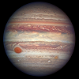

|
 | |||
|---|---|---|---|---|
| Data Attributes | Venus | Jupiter | Saturn | Neptune |
| Mass (kg) | 4.87 x 10 20 | 1.90 x 10 27 | 5.69 x 10 26 | 1.02 x 10 26 |
| Diameter (km) | 12104 | 142,800 | 120,660 | 49528 |
| Mean Density (kg/m 3) | 5250 | 1314 | 690 | 1640 |
| Escape Velocity (m/s) | 10400 | 59500 | 35600 | 23300 |
| Average Distance from Sun | 0.723 AU (108,208,930 km) | 5.203 AU (778,412,020 km) | 9.537 AU (1,426,725,400 km) | 30.07 AU (4,498,252,900 km) |
| Rotation period (Earth days) | 243.02 (retrograde) | 0.41 (9.8 Earth hours) | 0.44 (10.2 Earth hours) | 0.67 (19.1 hours) |
| Revolution Period (lenght of year in Earth days) | 224.7 | 11.86 | 29.46 | 60,190 (164.8 Earth years) |